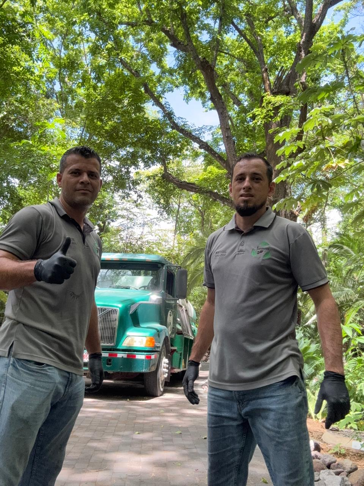

Galería
Servicio en todo Guanacaste
Soluciones sanitarias para hogares, hoteles, hospitales y mucho más.
Limpieza de tanques sépticos
Mantenimiento y limpieza profesional de tanques sépticos para garantizar funcionamiento correcto, higiene y tranquilidad.
Destaqueo de tuberías
Soluciones rápidas para desobstruir y recuperar el flujo de agua con trabajo eficiente y seguro.